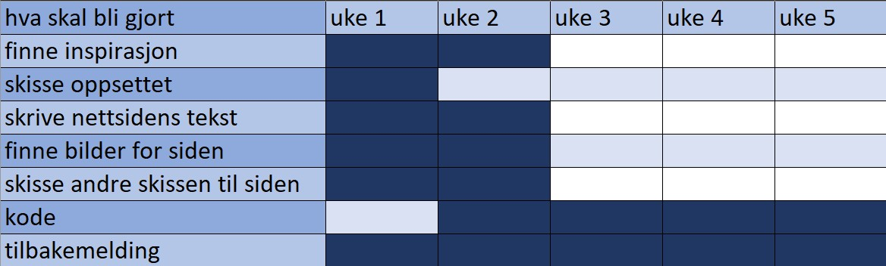
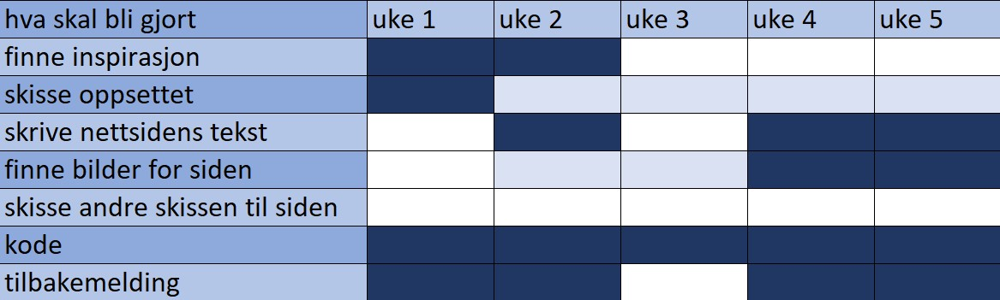

Det var ganske mye press på å lage en plan fra lærerne,
understreker hvor viktig det var for tidsstyring, og jeg er enig i at det hjelper med strukturering
av tid. Jeg tenkte på den logiske tiden for å gi hver del av oppgaven,
og jeg endte opp med bildet til høyre. Det virket fornuftig, og som en plan Jeg kunne følge med.

Men jeg droppet fort planen. Jeg endte opp med å gjøre ferdig noen ting raskere,
Jeg laget ikke en ny skisse siden jeg detaljerte den første. Etter hvert så jeg at det ville bli mer
koding enn jeg hadde forventet, og mange problemer i koden stoppet fremgangen min (men heldigvis ble de løst
etter hvert).
Jeg planla å gjøre nettstedet mobilvennlig og responsiv, og planla hvordan det skulle se ut uten
skisserer det ned, men det ble droppet en uke til fristen, jeg var ikke så nær ved å fullføre
opprettelsen av nettstedet. Logoen ble gjort den siste uken, det samme som designmanualen og de fleste
teksten til nettstedet sammen med oversettelsene. Det var mye arbeid, men heldigvis ble det gjort
før fristen.
Bildet til høyre er hvordan jeg endte opp med å bruke tiden min.
